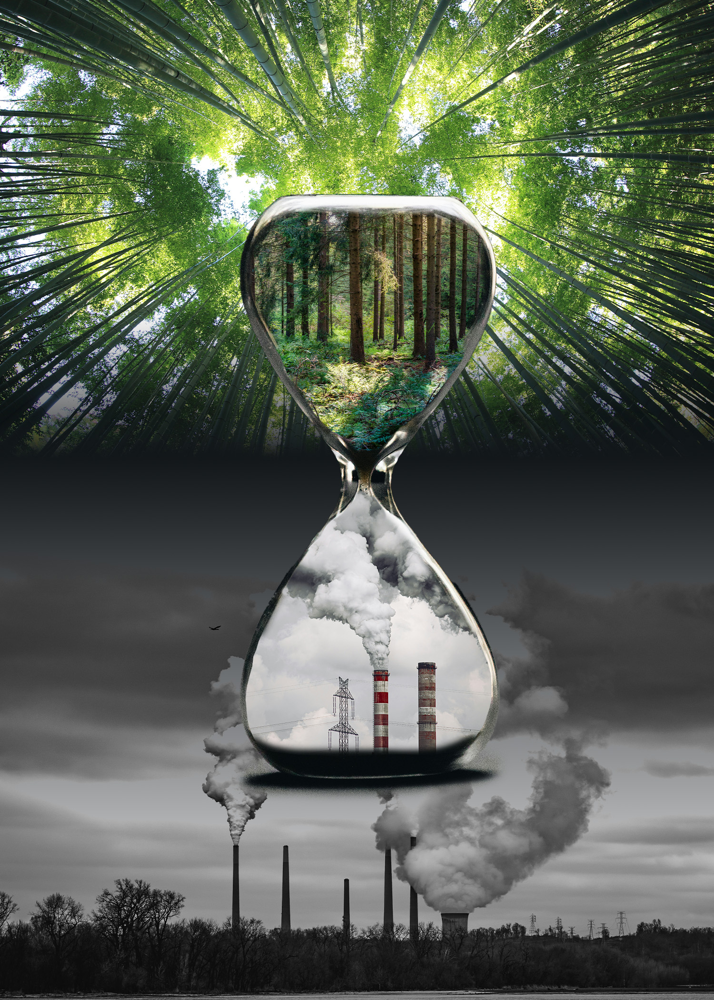
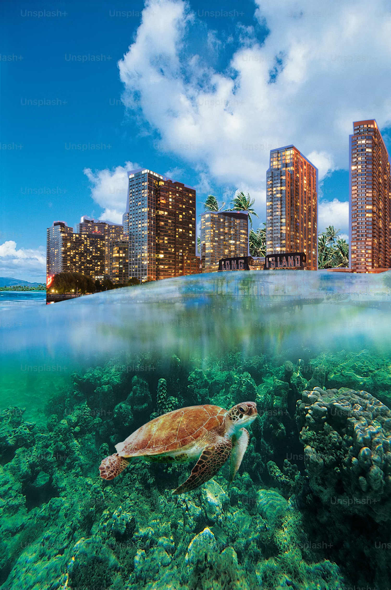

A composite photomontage using an hourglass motif to contrast lush forest canopies with industrial smokestacks and air pollution, highlighting how rapid urban and industrial expansion threatens natural ecosystems over time.

A split-level composite blending the Long Island waterfront skyline above the surface with a sea turtle and coral reef below, illustrating the intersection between coastal urban development and rising ocean levels.